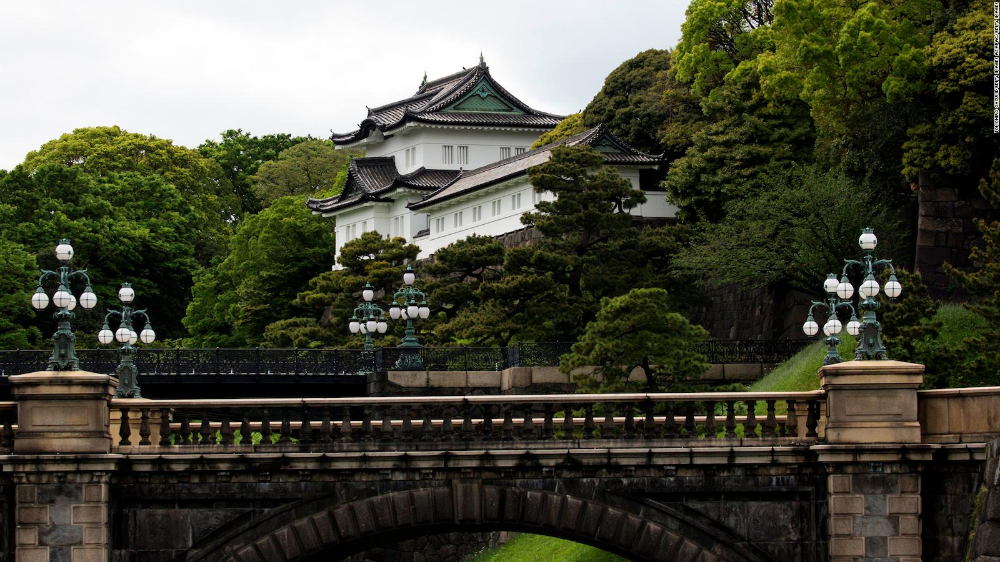
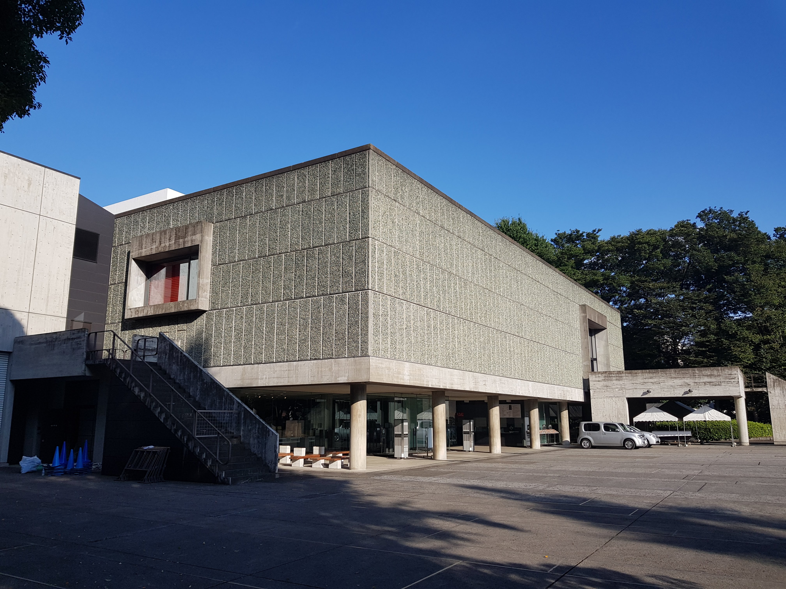
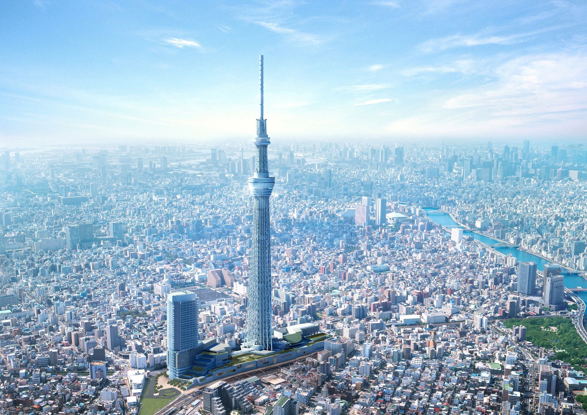

The Imperial Palace
The chief attraction of Tokyo's Marunouchi district is the Imperial Palace (Kōkyo) with its beautiful 17th-century parks surrounded by walls and moats. Still in use by the Imperial family, the Imperial Palace stands on the site where, in 1457, the Feudal Lord Ota Dokan built the first fortress, the focal point from which the city of Tokyo (or Edo, as it was then) gradually spread.

Sensō-ji Temple
More details
Ueno Park
A paradise-like oasis of green in the heart of busy Tokyo, Ueno Park (Ueno Kōen) is the city's largest green space and one of its most popular tourist attractions. In addition to its lovely grounds, the park also boasts numerous temples and museums to explore.

National Museum of Western Art
More details

Tokyo Skytree
This 634-meter-tall communications and observation tower rises out of the city's Sumida district of Minato like a huge rocket ship.
The country's tallest structure (and the world's tallest freestanding tower), the Tokyo Skytree opened in 2012 and has quickly become one of the city's most visited tourist attractions thanks to the incredible panoramic views from its restaurant and observation decks.
Edo-Tokyo Museum
One of Tokyo's newest museums, the impressive National Museum of Emerging Science and Innovation (Nippon Kagaku Mirai-kan) - usually simply referred to as the Miraikan - offers a fascinating insight into Japan's leading role in the field of technology.
Yanaka
Yanaka area is a true hidden gem which is located in the central Tokyo, yet has an unspoiled atmosphere and local vibes. Shop and eat like local at Yanaka Ginza Shopping Street and explore the charming neighbourhood!
Tsukishima Monja Street
Monja (Monja Yaki) is a traditional local dish in Tokyo, which could be extremely unique and unfamiliar to foreigners. It may look quite skeptical at first sight, but trust me, it tastes hundred times better than it looks.
Tsukishima area is known as the birth place of the dish and numbers of Monja restaurants gathers on the street called “Monja Street”. If you want to explore Japanese food culture deeper, go for Monja!
Nintendo Store
The long-awaited first official Nintendo store has finally opened in Tokyo in late 2019. Nintendo TOKYO is situated inside the newly renovated Shibuya PARCO right next to the new Pokemon Store. Nintendo TOKYO offers a wide range of merchandise, games and devices including some limited items exclusively sold at the shop
{kind=link}
{kind=link}
{kind=link}
{kind=link}
{kind=link}
{kind=link}
{kind=link}
{kind=link}